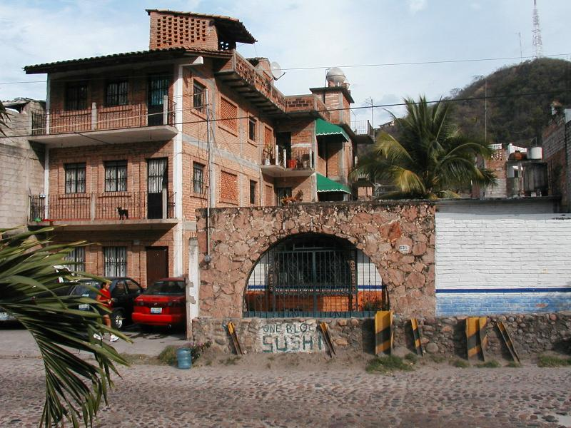
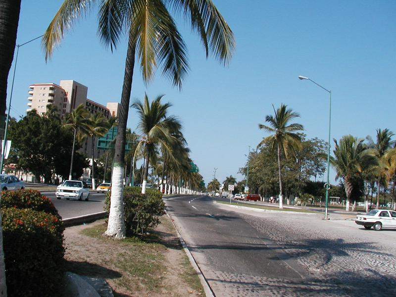
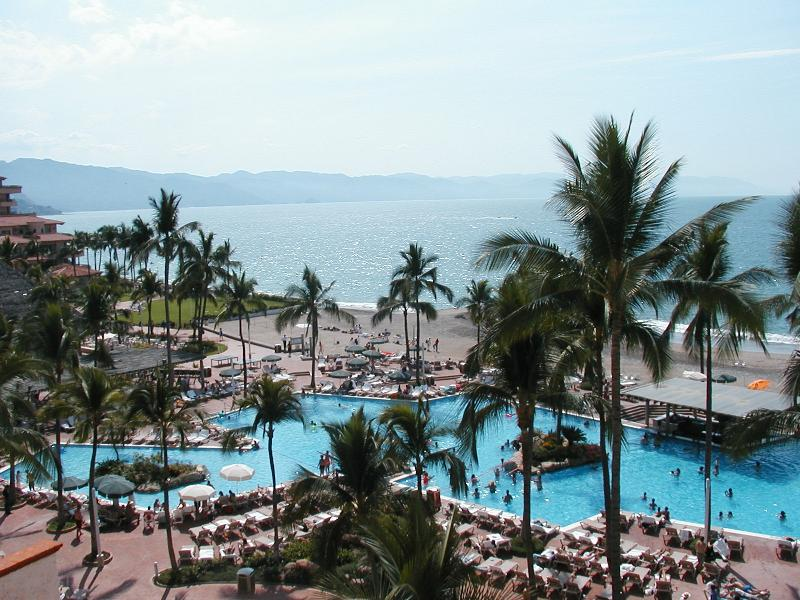
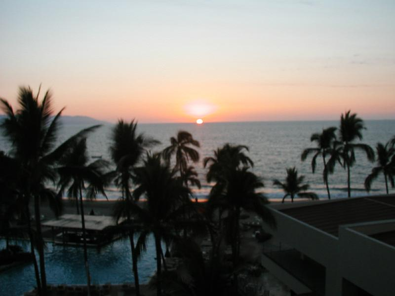
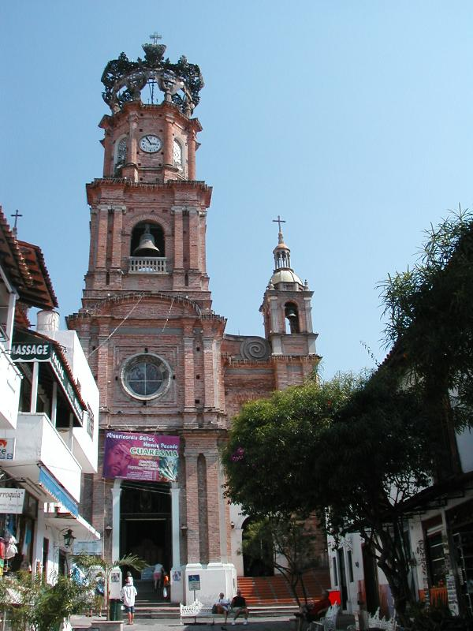
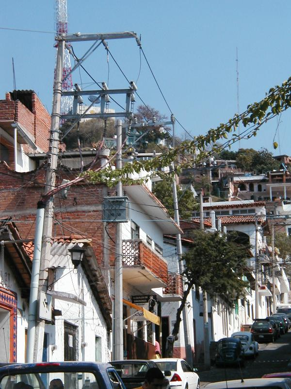
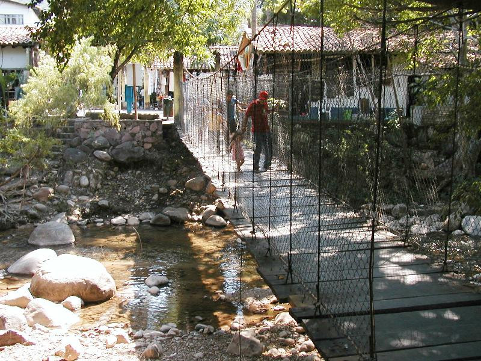
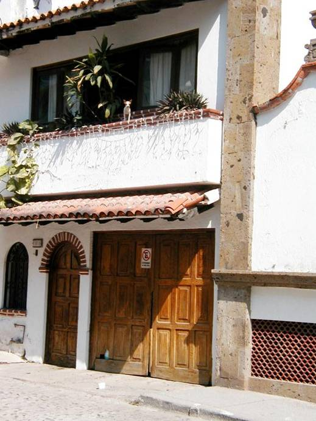
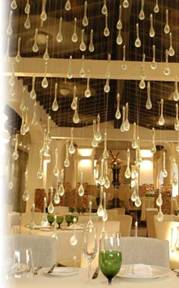

Voyage to Touristlan
A Virtual Root Trip
Virtual root, but not in the sense of UNIX. I’ve always felt a link with Latin culture, starting with being a High
School cholo
wannabe (shoutouts to mi barrio, VLH). So as a virtual Chicano,

The town is nestled
tightly between the sea and costal range.
It’s as far south as
There were three
currency exchanges in the airport all with different rates. I chose the most expensive one, considering
how much I was shortchanged. Ay mi gente, hearts in Aztlan,
souls in
The taxi dispatcher
wrote “Stratera” on my routing slip, which seemed
odd. I was jet lagged…but did I seem
distractible? Arriving at the hotel, I walked right into the Stratera booth at the annual convention of the Mexican
Psychiatric Association. The hotel room had everything but that American fetish
object, the clock. Thought of
complaining “Y que debe llegar a ser arecho sin reloj?”, but let it go. I was impressed to be on the 16th
floor, especially since the hotel only has 12.
The third floor is the 13th, for luck. Floor inflation, I
guess.
On the trip from the
airport, the sun was brilliant, the streets were well-tended, we passed Vie de
France, Gold’s Gym and Wal-Mart, and everybody spoke Spanish. It was Costa Mesa with Pemex
stations. In fact, it Puerto Vallarta seemed like a liquado de Costa Mesa, La Jolla, Santa Ana and
Waikiki. Switching contexts everywhere I looked convinced me I can handle
teleportation.

Costa Mesa outside the
door…

Waikiki outside the
window
It’s a very middle
class place, from what I can tell. We tourists were treated like precious
Americans (precios Americanos).
I’m not sure how the locals afford the town, unless there’s some kind of
under-the-table Kamaaina system of discounts. I saw some housing I wouldn’t want to live
in, but I believe I saw no true poverty. About 10% of the people on any given
street were tourists (about 1/3 of the tourists were Mexicans). Everyone was
relaxed and informal. Had fun joshing around in my limited Spanish, getting
laughs from the content and syntax alike.

February is humpback
migration season.
It was cool to be able
to whale watch from my dinner table.
For example, there’s a restaurant
called La Tía with a huge fresh seafood plate called La Tía. So I
asked for La Tía. The lady, evidently the owner, said “La Tía ? Quiserías me?” (The aunt? You want me?) After a moment’s
reflection, I said “¡Claro!” (Of course!) She pointed out “¿Pero sobrino mío, fue el incesto,
no?” (But my nephew, that would be incest, right?) Scoring on not, I love
it where boat-fresh seafood is plentiful and people understand that when you ask
for lemonade, you’re really hoping for limeade.

Claude Debussy wrote a
salon piece, The Engulfed Cathedral.
The town has so
engulfed the church that you can only see it in bits.
Que lástima.
I’d planned to stock
up on drugs while in town. The price for
Lipitor 10mg came to about $2/pill, twice what I’m
paying Aetna. I thought there must be a double pricing scheme, but one
pharmacist showed me his order book.
However, at one place, there was a $P18.75 sticker on the box, which
would be about 10¢ per pill. Maybe
that’s the kamaaina price.

Essay in Vertical
Lines
How many can you count in this picture?
The whole trip was an exercise in
unmerited grace. I arrived at Dulles just as the plane door was closing. Somehow I got on board. At Denver, the plane was overbooked by
5. Traveling on a free ticket, I was a
sitting duck, but didn’t get bumped. I’d chosen the hotel by value without
really noticing the location, yet it was a short walk from downtown. No need for
taxis. At an ATM, I was so bemused that the machine (at a formal commercial
bank) addressed me in informal form that I left my card in the machine. (That
is so me, hyperalert
to the abstract, oblivious to the concrete. Should have been a professor after
all.) A lady chased me down two blocks to hand it back. Later, rock scrambling
along a river bed, I fell into the water, landed face first on a rock, and
missed breaking two teeth by about ½ inch.
It gave me a real sense of “Man
proposes, God disposes”.

The Rio Cuale flows through the middle of
town.
This footbridge showed me what Dr. Maturin felt trying
to walk on the HMS Surprise in heavy seas. Do not attempt
this crossing for at least an hour after lunch. The day I left, the headline
was “Cadaver in El Rio”. But it wasn’t
me.

Don’t jump!
A Jalisco
Chihuahua
Money Consciousness
In the
I started leaving tiny tips,
every peso looked like a dollar, when in fact it was a dime. After one taxi ride I didn’t have enough
pesos for the tip so I threw in a quarter—almost insulting, I thought. Then I realized with shame that my stingy tip
just about doubled his take for the trip.
Pull up, guëro rico, and get
some perspective. After that I tried to
keep in mind the economic scale I was dealing on, and the consciousness of
“they need it more than you do”.
Octal Arithmetic
At Café Maximillian, they
posted prices for most stuff, but not for a set of sundaes pictured on the wall. I asked the lady behind the counter for the
price, which she seemed unwilling to give, and added one to my order. The bill was delivered verbally, and somehow
the total added up to about 33% more than it would base 10. However, I had nothing in writing. So I complemented him on his ability to add
in octal, which went right over his head.

Café des Artists
The best restaurant in town had Wolfgang Puck-quality
food and prices to match. Tried the pumpkin-shrimp bisque;
cold soup of melon, mint and ice cream; roast duck over cactus with ginger
lemon sauce. Recommended.
For additional
content, see:
·
Yelapa
and